{kind=link}
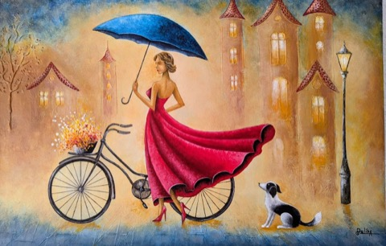
Paris mood
Original paintings by Gela Delibashvili
Deliba Art brings together the visual rhythm of jazz, the poise of elongated figures, and the atmosphere of historic French and Georgian streets, balconies, cafes, and evening lights through textured oil and acrylic painting.
Deliba Art Gallery
Open any work to view it in full. Inside the artwork viewer you can expand the story and description for each painting.

Paris mood
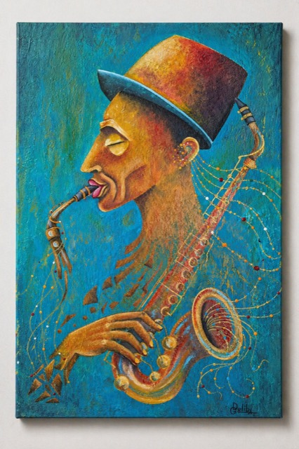
Jazz energy
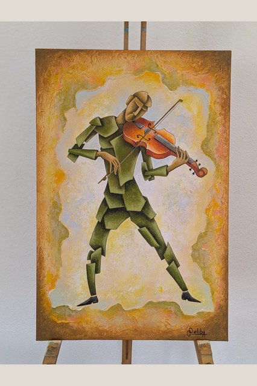
Musical abstraction
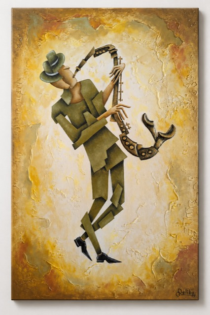
Jazz series
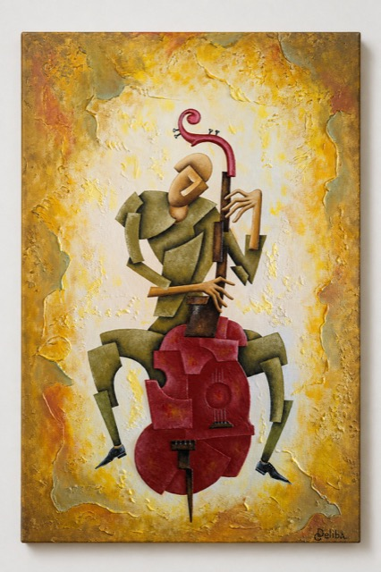
Jazz series
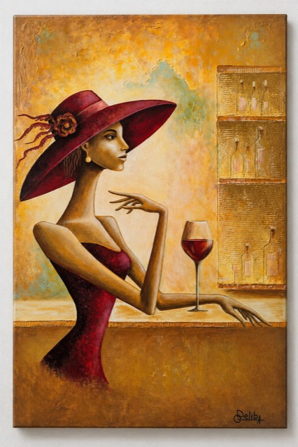
Elegant figure
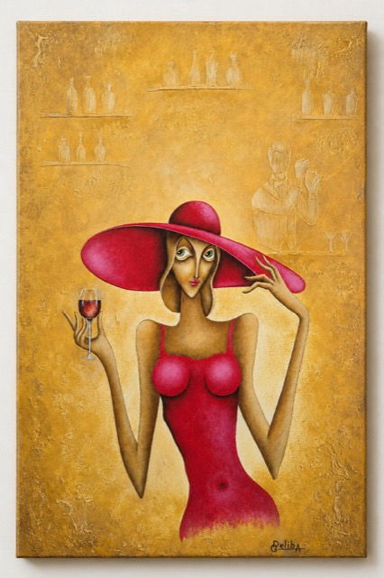
City evening
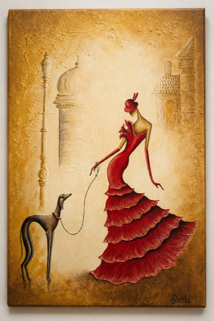
Grace and style
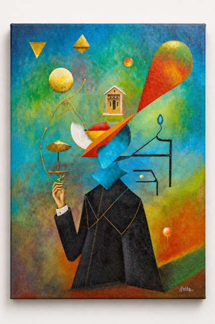
Reflective mood
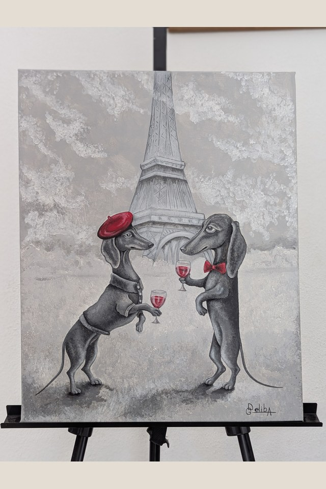
Paris rendezvous
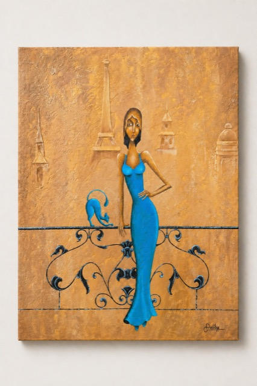
Paris scene
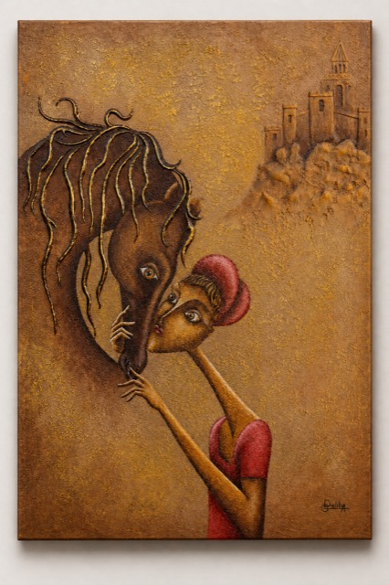
Balanced composition
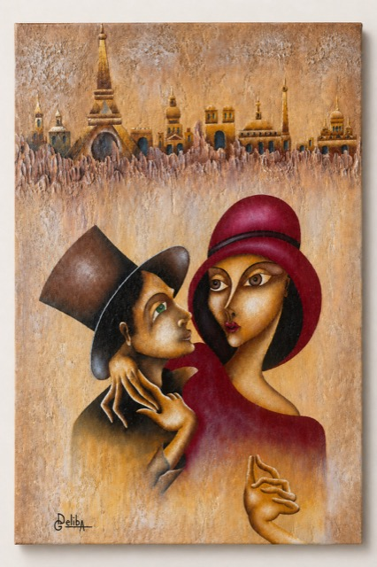
Paris romance
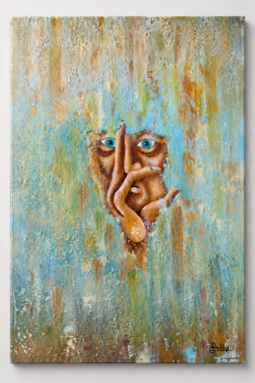
Portrait focus
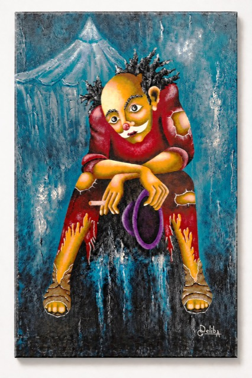
Intimate pause
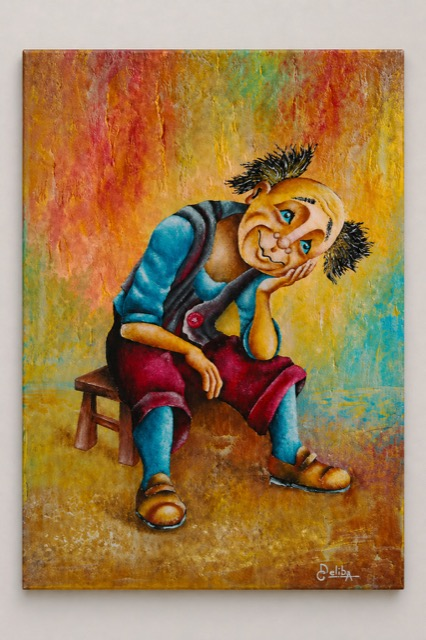
Inner world
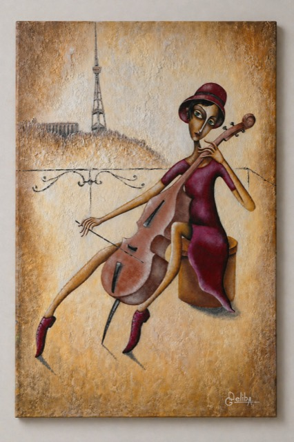
Musical line
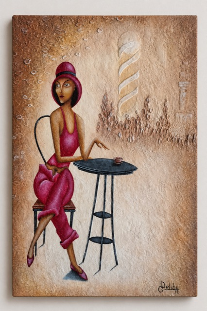
Cafe mood
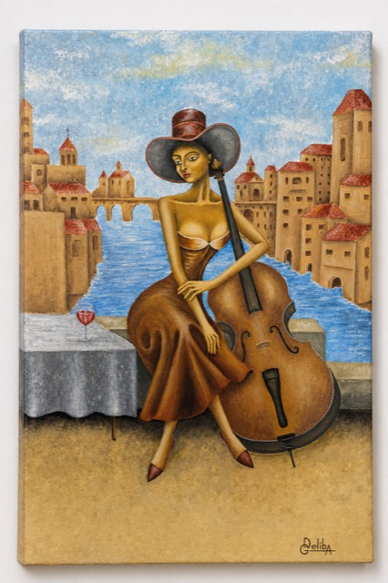
French elegance
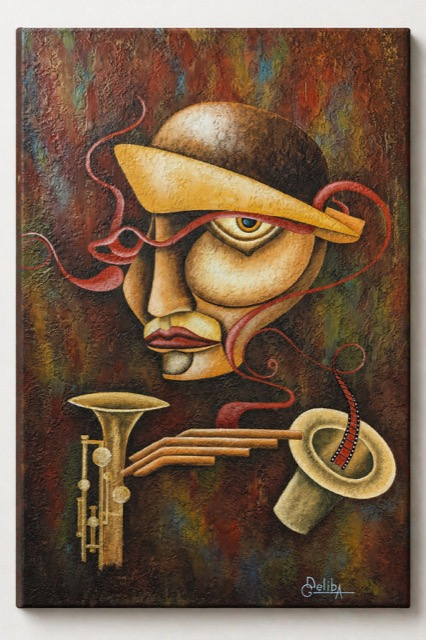
Cinema homage
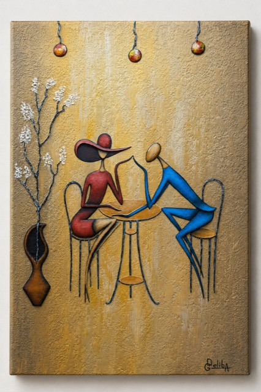
Romantic mood
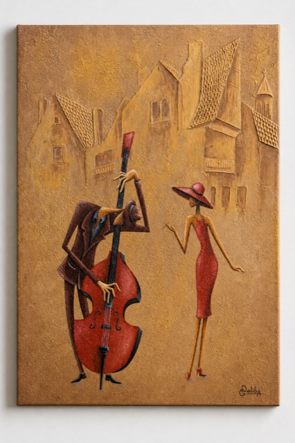
Blue mood
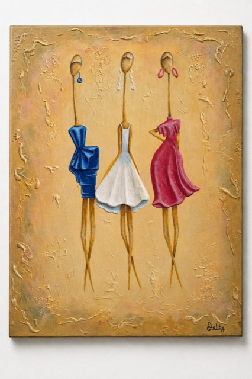
Feminine trio
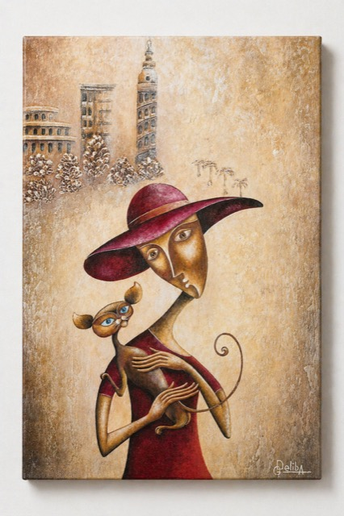
Motion and ease
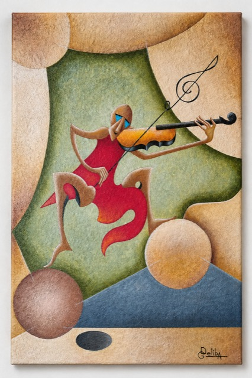
Inspiration
Keep in touch
Send a message about an artwork, availability, collaboration, or exhibition inquiry.
Original paintings by Gela Delibashvili live in a space between music, femininity, Paris atmosphere, and textured contemporary figurative art.
{kind=link}
{kind=link}
{kind=link}
{kind=link}
{kind=link}
{kind=link}
{kind=link}
{kind=link}
{kind=link}
{kind=link}
{kind=link}
{kind=link}
{kind=link}
{kind=link}
{kind=link}
{kind=link}
{kind=link}
{kind=link}
{kind=link}
{kind=link}
{kind=link}
{kind=link}
{kind=link}
{kind=link}